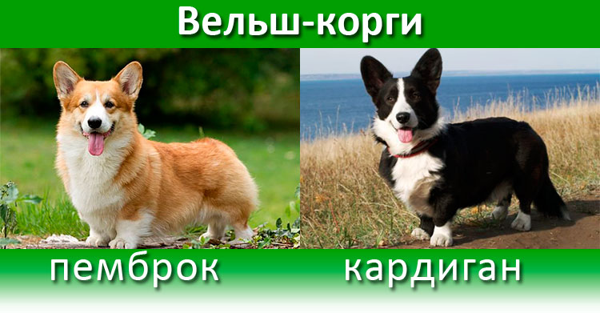

Первая группа которую чаще представляют при фразе Корги-Пемброк это прекрасные чаще всего рыженькие похожие на лисичку собачки
и вторая группа которая не меньше распросторонена, но тоже прекрасные собачки Кардиган.
Пемброки самый маленький из группы пастушьих собак, однако его компактность является,
безусловно, его преимуществом.
Это один из тех песиков, про которые обычно говорят «мал да удал».
Внешне вельш корги пемброк похож на маленькую лисичку, но выражение его мордочки нельзя назвать хитрым или
ехидным - скорее оно добродушно-любопытное, а иногда кажется, что этот песик даже улыбается. Вес 12 кг. Рост 25 – 30 см

Кардиган это овчарка небольшого роста. Характерные особенности внешности – короткие лапы,
вытянутый корпус и большие стоячие уши.
Это одна из двух разновидностей вельш корги, выведенных в
Великобритании пастушьих овчарок. Они стали популярными из-за привлекательного внешнего вида и
спокойного доброжелательного характера. Этот пес может стать преданным компаньоном и верным другом,
подходит даже для неопытных хозяев.
Рост взрослого кардигана — около 30 см, вес — 15-18 кг.
картинка с абсолютной ссылкой
Картинка с относительной ссылкой